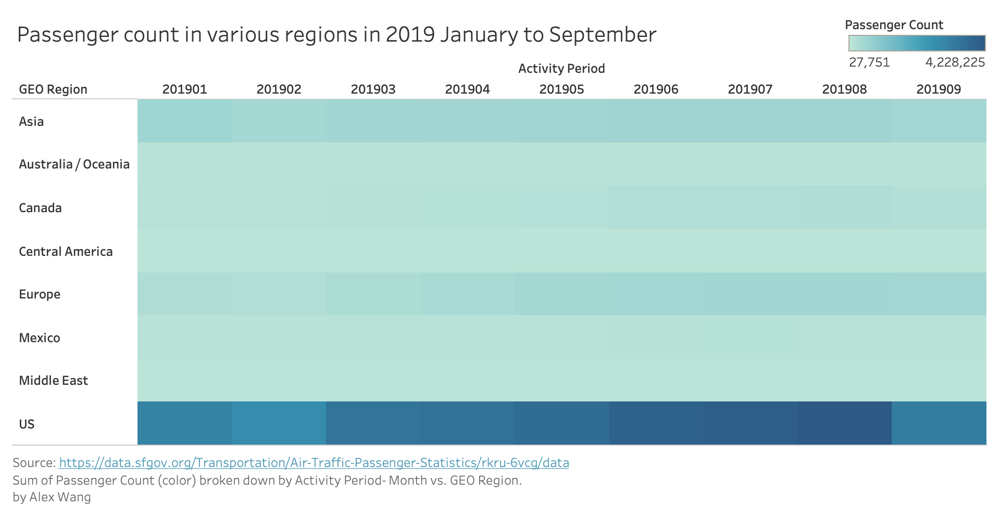

Passenger count in various regions in 2019 Janurary to September
Heat Map
This visualization shows pssenger count in various regions in 2019 Janurary to September in SFO.
Data
- GEO Region: A categorical variable, represents the region of flights.
- Activity Period: A categorical variable, represents the month in 2019. In range of 01 to 09 in this visualization.
- Passenger Count: A quantitative discrete variable, representing number of passengers. In range of 27751 to 4228225
Visualizations
Instructions
X-axis represents the Activity Period from January 2019 to September 2019. Y-axis represents regions. The stronger color represents more passenger count, vice versa.
Wrangling
This data is filtered by Activity Period greater than 201812 to choose data in 2019. Filtering applied on the website interface of orginal dataset.
Acknowledgements
Link to insiration
Link to StackOverflow snippet
Thanks to Person Name for their suggestion to do something with the visualization.